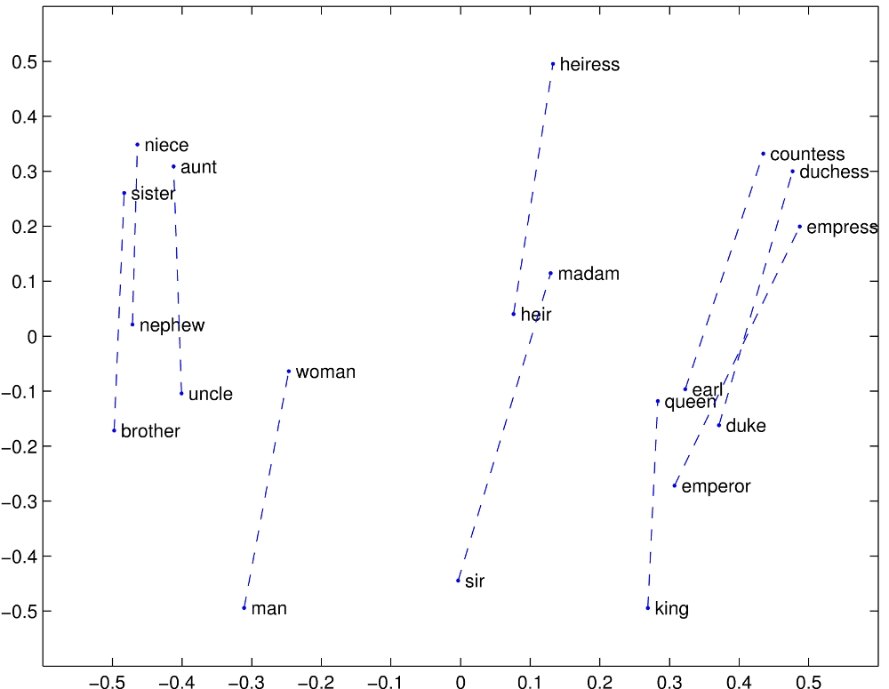

In the 60s, Marvin Minsky assigned a couple of undergrads to spend the summer programming a computer to use a camera to identify objects in a scene. He figured they’d have the problem solved by the end of the summer. Half a century later, we’re still working on it.
- xkcd 1425: “Tasks” alt text
Why is it hard to write a program to identify pictures of birds? Funnily enough, it’s for the exact same reason the US Supreme Court struggled to define obscenity, finally settling on the now-infamous criteria “I know it when I see it”. The difficulty, of course, is that human made categories are not exact, and exist only by agreement. We’ve cut arbitrary lines through the space of things which exist: what’s a fruit vs. a vegetable? A car vs. a truck? These lines blur - no exact definition can, in the end, be given.
Those interested in the philosophical side of this discussion will appreciate Scott Alexander’s The Categories Were Made For Man, Not Man For The Categories. With recent advances in natural language processing and machine understanding, we’ll discuss how these problems are solved today, and how they can be used to build better search engines.
The problem of computational understanding of concepts shows up in everyday life most frequently through search: Google a question, and you’ll more than likely receive an answer. How do such systems work?
Traditional search algorithms for information retrieval work assuming a very straightforward principle: documents that contain terms found in queries are more likely to be relevant to the query than documents not containing those terms. So, to give a relevancy ranking to a document, we can simply compute how often a search query term is found in the document (and give a bonus if those words are rarely found in other documents). This way of relevancy ranking for search is nicely captured in the tf-idf (term frequency - inverse document frequency) score:
\[\text{tf-idf} = \frac{f_{t,d}}{ \text{max}\{f_{t',d}:t' \in d \}}\times\log\frac{N}{| \{ d \in D:t \in d\}|}\] where \[ \begin{aligned} f_{t,d} &= \text{the frequency of term}\,t\,\text{in document}\,d\\ D &= \text{the set of documents}\\ N &= |D|\text{, the number of documents in the corpus}\\ \end{aligned} \]
Using something as simple tf-idf, you get pretty far. People learn to harness the system and develop their “google-fu”, choosing rare words that are likely to appear in the document they want. However, there are problems.
Consider someone searching for the term “flora”: maybe the document they were searching for instead contained the word “vegetation”. Extremely similar concepts, but the strings don’t match, so the system won’t recommend it. “Okay”, you think, “well we’ll just add all the known synonyms of a word and swap them out. And if we detect ‘not’ before a word we’ll search instead for the antonyms! And we’ll build up syntax graphs, and grammatical hierarchies and…”
You’ve just gone down the feature engineering path. It’s admirable, and many have made some damn impressive tools with great effort - but it’s ultimately brittle, won’t generalize to other languages, and took a huge amount of time to design. Can we do better?
Instead of trying to encode every scrap of explicit knowledge and structure we can think of into a system, can we build a system that learns for itself how best to represent concepts?
This was the questions on the minds of researchers in 2013, when the seminal word2vec paper was published. They created a basic system of this kind in a remarkably simple way:
Consider encoding a word into a vector that represents the word’s place in the dictionary, e.g. if there are 100,000 words in the english language, and if e.g. “apple” was the first word alphabetically, the dictionary vector for “apple” would be a 1 in the first place, followed by a zero everywhere else: \[\text{apple} = [1,0,0,0,...]\] Now if “zebra” was the final word in the language, we would represent it like \[\text{zebra} = [0,0,0,...,1]\]
and so on for the rest of the words in the dictionary. Now, take as a linguistic hypothesis the following: words that appear near each other in text often carry related semantic meaning. For example, the word “apple” will probably appear near the words “pie” and “tree” and “fruit” much more often than it will appear near the word “chair”. If we can build a system that outputs “pie” when it’s fed “apple”, or outputs “ocean” when it’s fed “fish”, it must have learned at least at a superficial level how concepts are related.
With this linguistic hypothesis, we want to train a neural network to output dictionary vectors representing “tree” and “fruit” when we put in the dictionaryvector for “apple”. We’ll build a single hidden layer neural network that accepts a 100,000 dimension vector, learns a transformation to some intermediate hidden representation (which we’ll force to be much smaller in size, say 1,000 dimensions), and then another transformation back to 100,000 dimensions, which will represent another dictionary vector:
 A single hidden layer neural network
A single hidden layer neural network
By training this network on millions of examples of nearby words sourced from text, the intermediate, hidden representation in the network is forced to encode general semantic information about concepts learned from text. After training for many iterations, the word2vec authors showed a remarkable result: the hidden representation of “king”, minus the hidden representation of “man”, plus the hidden representation of “woman” equaled… the hidden representation of “queen”. The network wasn’t taught this, but it learned to embed these words into a semantic space, where related concepts were mapped near to each other. It was forced to learn this mapping to a semantic space through its training procedure!
 An example semantic embedding of concepts into vector space, showing only two dimensions
Using semantic vectors like these, we can make progress towards making our concept search better. Now even if a user wants to search for “flora” but a text uses the word “vegatation”, it’s no matter! Their semantic vectors should be nearby each other in semantic vector space. By comparing these vectors, we can rank concepts by similarity of meaning, and get around the brittle term-based search of yesteryear.
“A human is not a device that reliably reports a gold standard judgment of relevance of a document to a query.”― Hinrich Schütze, Introduction to Information Retrieval
 A
A